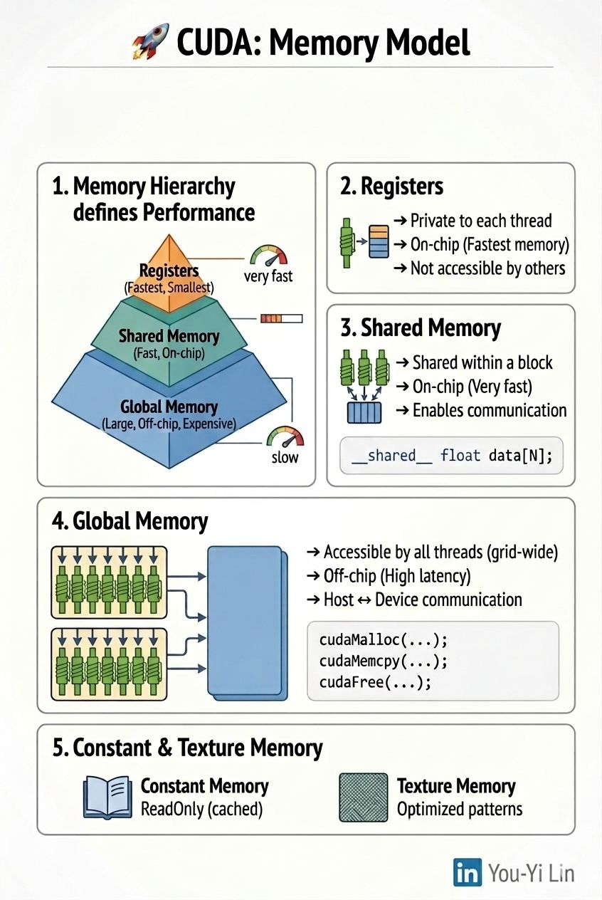

CUDA's memory model: why memory, not compute, is the bottleneck
When I started learning CUDA, I thought performance was about parallelism. I was wrong — memory is the real bottleneck.
Memory hierarchy defines performance
Register → shared memory → global memory. Optimizing is more about minimizing slow memory access and maximizing data reuse than it is about parallelism itself.
Registers: fastest but limited
Private to each thread, on-chip, allocated per thread.
Shared memory: the optimization playground
Shared within a block, on-chip. Data reuse and tiling are critical for matrix operations — shared memory is where most performance gains come from.
Global memory: large but costly
Accessible by all threads in a grid, off-chip. Most CUDA performance issues originate here.
Constant memory
Read-only, cached. Efficient when all threads read the same value.
Texture memory
Cached, optimized for spatial locality. Useful for irregular access patterns.
Key insight
CUDA performance is not compute-bound — it's memory-bound. Optimization is more about controlling how data moves than about how much you parallelize.
